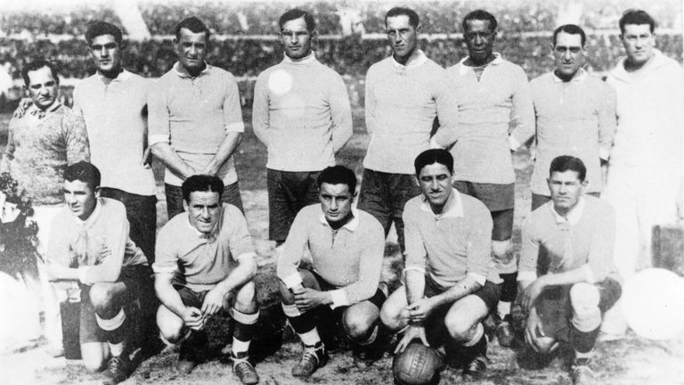

1930
WORLD CUP
HOST COUNTRY:
URUGUAY
IT WAS THE FIRST EDITION OF WORLD CUP.
In the first World Cup final, held on July 30, 1930, 93,000 spectators looked on as Uruguay defeated Argentina 4–2 in a rematch of the 1928 Olympic gold medal game.
champion:
uruguay
Runners-up:
argentina
uruguay team and final highlights
